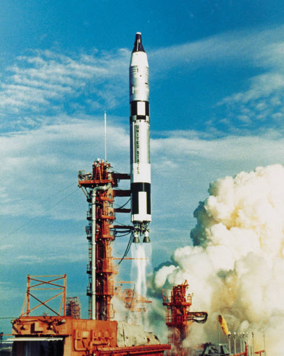
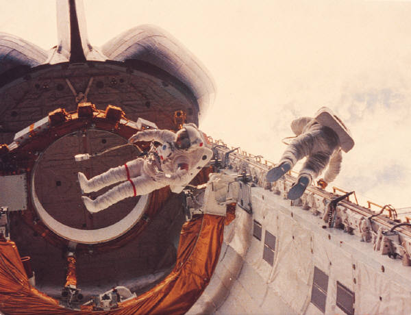
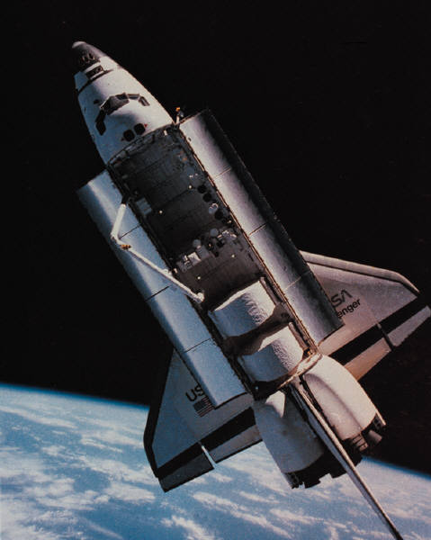

|  | En los años 60´s el hombre llego a la luna utilizando tecnologias que hoy en dia serian un tanto rudimentarias. |
 |
Antes de alunizar, los astronautas tuvieron que rondar alrededor de la luna, experiencia que, segun comentarios de estos, fue peligrosa pero inolvidable |
 |
Todo el mundo estuvo a la espectatia para ver enla teevsion en el momento en que un hombre pisara la superficie de la luna por primera vez |
 |
Esta es una de las fotografias mas difundidas en la historia del hombre. es la primera huella del hombre en la luna |
 |
En esa mision hubo mucha actividad cientifica en la suprficie lunar |
 |
 |
 |
Asi se ve la tierra desde la luna, esta es quiza una de las vistas mas bellas de nuestra casa |
|  |  | |
 |
Con la tecnologia moderna hemos podido conquistar el espacio y hasta vivir en el. |  |